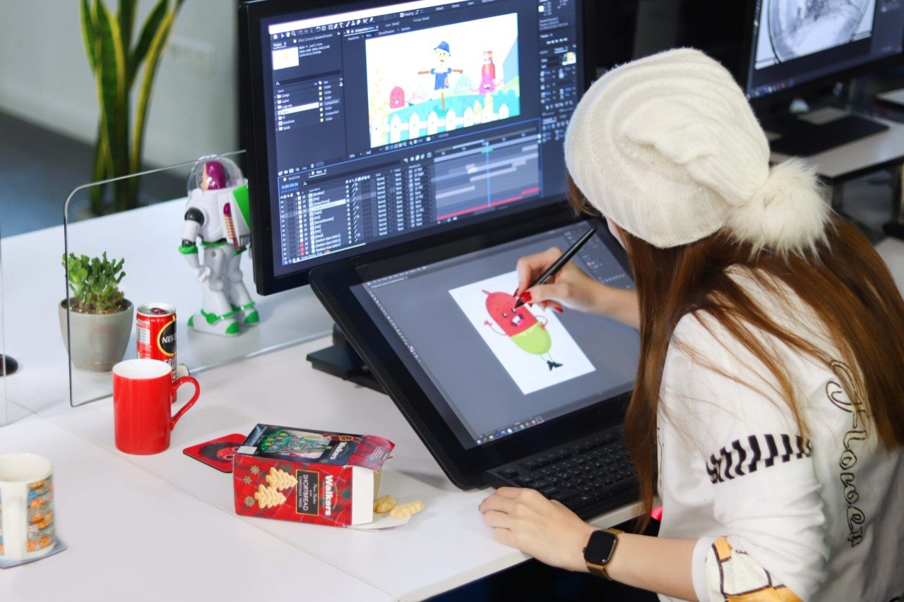
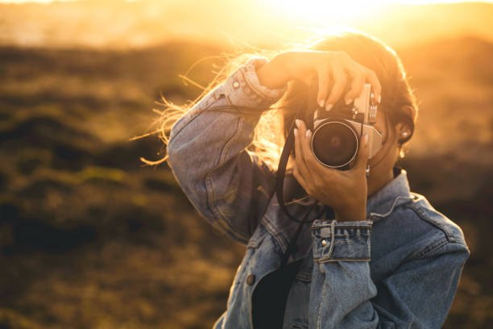

Welcome to my website

Hi, my name is Deema. I am from Syria and I am a Media Arts student.
I enjoy drawing, animation, and video production. I also studied
computer engineering before, so I have some experience with coding.

I love sketching and illustrating in my free time. It allows me to express my creativity on paper and bring my imagination to life.

Breathing life into characters through motion is incredibly rewarding. I enjoy experimenting with different animation software and creating short, dynamic sequences.

Capturing the world through a lens helps me appreciate the beauty in everyday moments. I usually focus on landscapes, portraits, and street photography.